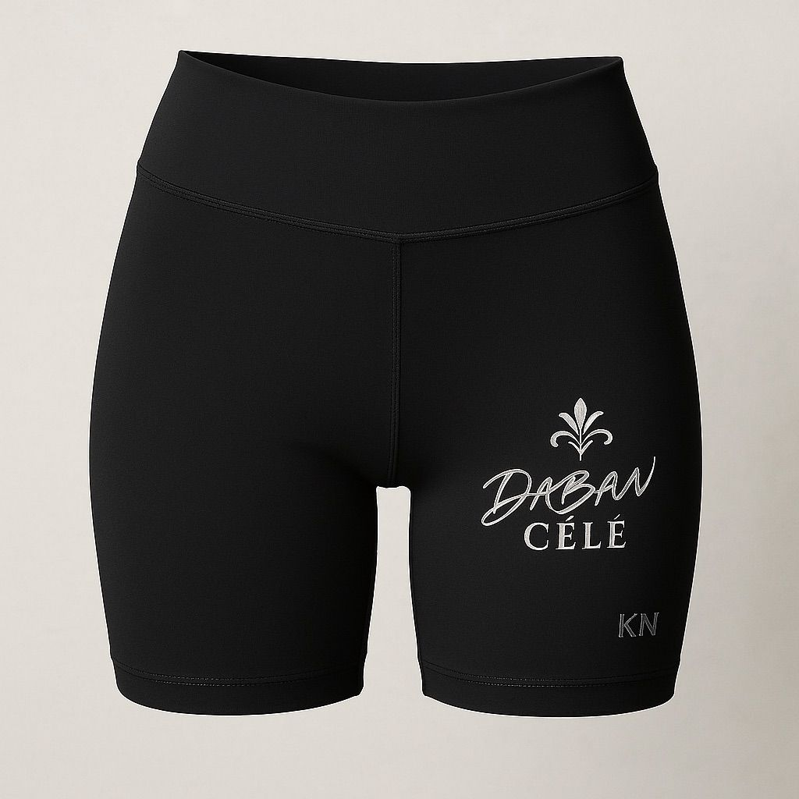

Marka Hikayesi
D-Cêlê vitrinde, Daban-Cêlê kökte.
D-Cêlê kısa, akılda kalan ve sert bir marka yüzü sunuyor. Daban-Cêlê ise markanın asıl adı olarak daha derin, daha kalıcı ve daha prestijli tarafını temsil ediyor.
Daban-Cêlê
Köklerden doğan prestij
Daban-Cêlê Maison
Köklerden doğan prestij
Daban-Cêlê; aktif giyim, dış giyim, triko ve aksesuar dünyasını tek bir marka diliyle buluşturan bir vitrin. Siyah, krem ve metal tonlar ile güçlü, modern ve premium bir duruş sunar.

Asıl marka adı
Daban-Cêlê Köklerden doğan prestijKategoriler
Kadın Spor

Erkek Spor

Dış Giyim

Triko

Aksesuar

Lookbook
Seçkiler
Kadın Spor
Spor bra, tayt, biker şort ve crop kombinleri ile markanın aktif yaşam tarafı net bir kimlik kazanıyor.


Erkek Spor
Atlet, tişört, şort, eşofman altı ve fermuarlı takımlar ile erkek spor kategorisi ana omurgalardan biri olarak konumlandırıldı.



Dış Giyim
Siyah ve camel kabanlar, şişme montlar ve uzun kışlık tasarımlar Daban-Cêlê dünyasını daha rafine bir moda alanına taşıyor.


Triko
Triko elbise ve bere-atkı setleri markanın daha giyilebilir, daha sakin ve premium yönünü gösteriyor.

Aksesuar
Şapka, çorap, çanta, kemer, tote bag ve saat kombinleri ile sayfa daha büyük bir moda evine aitmiş gibi görünüyor.


Lookbook


Marka Hikayesi
D-Cêlê kısa, akılda kalan ve sert bir marka yüzü sunuyor. Daban-Cêlê ise markanın asıl adı olarak daha derin, daha kalıcı ve daha prestijli tarafını temsil ediyor.
Daban-Cêlê
Köklerden doğan prestij